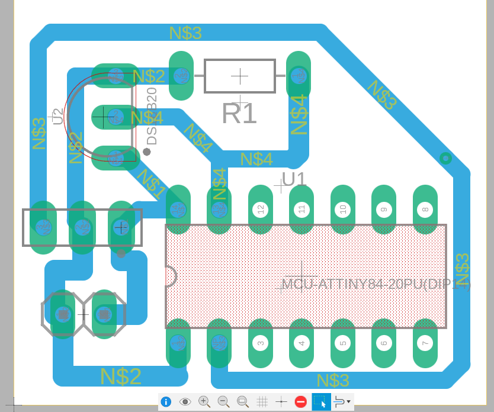
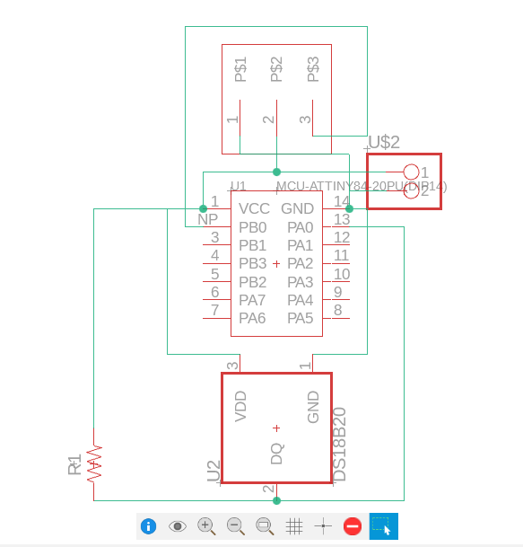
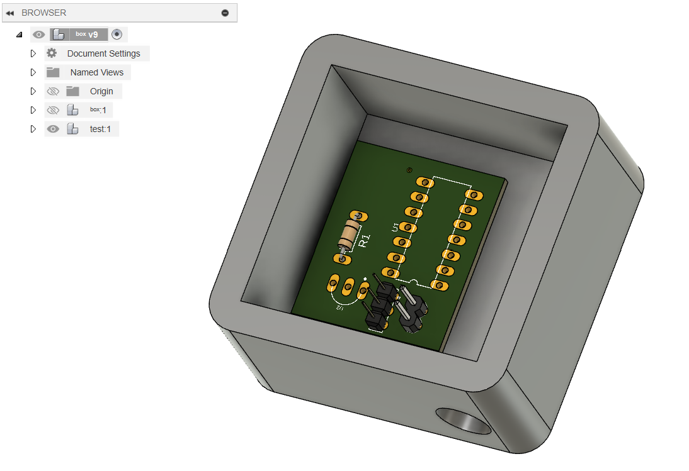
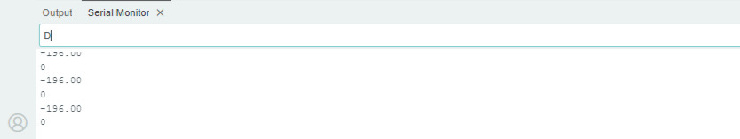

soph week 1/2 - 1/10
new years, same bugs.
due to the new years, i decided to just incorperate the 2 days we had on the 2nd, and the 3rd to this post.
i started this week by focusing on the pcb design for my lightbox, and got guidance from my friend miles on how to create the pcb.
2d pcb
shown above is the 2d model of my pcb, where i tried to make it as compact as possible, in the effort to create as small of a board as possible. i may redesign the board to use a type-c connector for power to better fit my design
schematic of the board
with the board design, unless i decide to make new improvements, i’m ready to pcb mill upon finishing my lightbox.
box design
i decided to try and 3d print my box, using the acrylic piece as a face of my box. originally, i was going to try and make it as compact as possible, but i found more interest trying to 3d model a mac mini design by scratch, and replace the top apple logo with my acrylic piece.
the box still has lots of work to be done, as i want to try and incorporate all the features of the mac mini, including usb ports, ethernet port, and the bottom fan part. throughout the process of creating this box, i spent time talking with mr.l about overhang, and how to counteract any problems with it.
code bugs
like last post, the negative number (-196) shows that the temperature sensor is still floating. it was working the previous days of the week, until when i had to finish up the software of my program. the previous problem was due to my “led_pin” being set at 9, as even though it was wired up correctly, it caused an issue somehow which lead to the temperature sensor continuously printing -196.
besides that bug, i finalized the code for the lightbox (assuming this works). i decided to use a switch statement which changes the severity of a blue color depending on the temperature in the room, mapped with a range (0-20, 20-40, 40-60, 60-80, 80+)
however, more bugs continue, with the attiny84 randomly deciding to not respond, leading to me having to swap out the metro-mini that i’m using as the master.